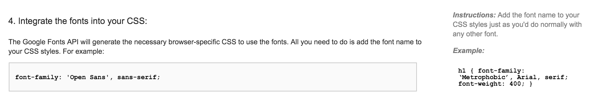

Intro to Design & CSS Typography
Web design and web development are often thought to be interchangeable but are actually quite different. Some people do both and some specialize in one or the other.
In a nutshell, web design is about creating the visuals. Web development turns those visuals into code, to be able to display it in a web browser.
There are even further specializations, such as back-end developers, front-end developers and interaction designers, just to name a few.
Before we launch into design and more CSS, let’s do a review.
CSS Review: Adding CSS
Inline
CSS is added to a specific HTML element using the style attribute.
<p style="color:red;">This paragraph will be red.</p>
Internal
Included in the <head> with a <style> tag.
<head>
<title>Page Title</title>
<meta charset="utf-8">
<style>
p {
color: red;
}
</style>
</head>
External
Add the CSS to a separate stylesheet (.css file). Use the <link> tag to reference the css file in the HTML page. Note that the <style> tag is not required for this method.
<head>
<title>Page Title</title>
<link rel="stylesheet" href="filepath/filename.css">
</head>
What are the pros & cons of each technique?
CSS Review: Selectors
Type selectors target HTML elements by their element tag name.
p {
/* targets all paragraphs */
}
Class selectors are added using a class attribute to any element. Remember, any attribute is added to the opening HTML tag. The same class can be used 1 or more times throughout the page and must be reference in the CSS with a leading period.
<p class="special">This is a special paragraph</p>
.special {
/* applies to any element with this class */
}
p.special {
/* more specific - applies only to paragraphs with this class */
}
ID selectors can be used only once per page and is reference in the CSS using the number/hash symbol (#).
#about {
/* applies to any element with this id */
}
section#about {
/* more specific - applies only to a section element with this id */
}
Web Design: Brainstorm Ideas
Before writing a line of code, it helps to define your goals for the website first.
Here are some brainstorming questions that can help you (or your clients) define your brand & goals. You don’t have to answer all of these questions but keeping these ideas in mind before starting the design process can help inform you decisions.
- What is the vision/mission for your business or the values that represent your business?
- Do you have/want a tagline or slogan? If so, what is it?
- Where and how will your logo be used? (e.g. website, business cards, posters, stationary, packaging, t-shirts, etc.)
- What should people think or feel when they see your brand / website?
- Use 5 adjectives to describe your brand / website’s personality.
What is Design?
Design is problem solving. In web design, the problem to be solved is how to effectively communicate the content.
Design uses a combination of type, color, images and form to present content in a clear and concise manner that is visually appealing and reiterates the ideas we want to communicate.
What Makes Good Design?
- Clear - the content is easy to read and the graphics and colors support the ideas
- Concise - content is presented in a concise manner and you can navigate the website to find the content you need easily
What are some of your favorite websites? Let’s look at a few different sites and compare designs.
Purpose and Organizing Content
What do you want your website to do? Who is your target audience? What is the purpose of the website?
When thinking about how to organize and arrange the content on your website, think about how your eyes navigate a web page. Our eyes tend to gravitate to larger elements first, such as:
- large images
- large text
- blocks of color
Then we narrow in on interesting blocks of content to further explore in detail.
Use the layout of your website to guide the viewer’s eye and provide a clear path for viewers.
Based on purpose and organization, how would a photographers website differ from a news outlet?
Layout Tips
Size
- vary the size of your content areas to guide the viewer
- large content areas can be used to indicate prominent information
- less important information are given smaller areas
- create a visual hierarchy of importance
Alignment
- aligning items relative to each other makes visual connections
- helps users understand the content flow and navigate more easily
Space
- make sure there is enough space around your content
- spacing enhances the readability of your content
- consistent spacing adds balance and harmony to your design
- gives content space to breathe, less clutter
Designing with a Grid
A popular technique for design layouts is to use a grid. A grid provides:
- consistent structure
- helps to create visual hierarchy
- flexibility in design
Using a Grid
Using software like Photoshop or just paper & pencil:
- divide up the width of your page into equal width columns
- include equal space between each column (a gutter), for breathing room
- use the grid to mark areas for the different pieces of content
Though you can use any number of columns, a 12 column grid is common because it can divide easily into 1, 2, 3, 4, 6, 12. This is handy for responsive designs (can adapt to different screen sizes).
Here’s a handy tool for creating a grid: Grid Calculator
Using graph paper can also help layout columns and gutters when doing a hand drawn sketch. Here are some examples: http://bit.ly/1KbJbfZ
Page Layouts with Grids
Some content blocks may span multiple columns, others may span only one. Not every page component needs to fit into the grid dimensions either.
For example, the Food Sense Blog website uses the 12 column grid to organize the content in different ways.
{kind=link}
In this article, 15 Reasons Why A Grid Based Approach Will Improve Your Designs, you can see even more ways to lay out content with a wide variety of grids.
Resources
EXERCISE: Sketch out a website layout
Using paper and pen/pencil, roughly sketch a 12 column grid on the paper. Use this as a base for the layout for a website.
Block out areas of the page for your content. Experiment with multiple layouts. Remember the tips of size, alignment and spacing when arranging your content.
Typography
Good writing and good typography can help your reader understand your message more clearly.
Terminology
Typography is the art of arranging type to engage and guide your readers.
Typeface is what you think of when you think of Font. It is a set of fonts or a font family that is designed with common characteristics and features.
Font is the individual font file that is part of the font family or typeface.
For example, Helvetica Neue is the typeface. It is a font family which contains many font files from Helvetica Neue Ultra Light to Helvetica Neue Extra Bold. The decision to set your type in Helvetica Neue and how you arrange it on the page is typography.
Type Classification

Serif Typefaces
- distinguished by the little “feet” or “hats” at the bottom or top of the letters
- grew out of the hand-lettering of scribes and roman or blackletter calligraphic writing.

Sans Serif Typefaces
- just like the name implies–no serifs at the end of the strokes
- most are monoweight
- the strokes of the letterform appears to be all one weight
Much debate has gone into whether serif typefaces are better than sans serif typefaces in terms of readability at different sizes.
Some argue that serif typefaces have historically been better for small text because their serifs guide the eye while reading. Others assert that sans serif typefaces are better for reading because they are unencumbered by serifs.
Classification aside, when selecting a font, consider the application and the readability of the letterforms at the sizes you need.

Script Typefaces
- appear to be hand-lettered with a calligraphy pen, brush or pencil or pen
- use script typefaces sparingly and appropriately for your content
- can be unreadable in small sizes, all caps and long blocks of text

Decorative Typefaces
- have the characteristic of being very distinct in their style
- not great for long blocks of text, may become too consuming and unreadable
- can be great for decorative touches and add character to a design
Most decorative typefaces are one offs containing just one font file.
Tips for Selecting and Pairing Fonts
- Personality
- select fonts to reflect your personality, tone of voice and/or your brand
- Readability
- choose fonts that are easy to read
- try them in various sizes, weights and styles
- Contrast
- when pairing fonts, strive for sufficient contrast
- choose typefaces of different types or styles
- contrast with a serif and a sans serif, or
- a thick condensed sans-serif with a thin sans-serif
- Flexibility
- Select fonts that have multiple styles to give you the most flexibility
- Clarity
- select only one or two typefaces for your content
- too many typefaces may make your design unclear
- Completeness
- look for fonts that have a complete character set
- pay attention to the glyphs and special characters you might need such as “@”, “$”, “#”, etc
- missing characters may be a sign of an incomplete and poorly designed font
Resource
Chrome extension for finding out what fonts are used on any website.
Typefaces, CSS and the Web
Web Safe Fonts
Fonts that are considered to be “web safe” refer to pre-installed fonts on a computer or device.
Because not all operating systems have the same fonts installed, use a font stack in your CSS to provide multiple options. Choose fonts that look similar and a generic option to provide a fallback option.
See examples of web safe fonts here:
CSS font-family
In CSS, to change the default typeface, use the font-family property.
body {
font-family: "Helvetica Neue", Arial, sans-serif;
}
- best practice is to list at least 2 options
- first font is the primary choice
- alternative fonts are declared in order of preference and separated by a comma
- font names with two or more words should be wrapped in quotation marks (single or double quotes)
- last font should be the generic option
Generic fonts
- sans-serif
- serif
- cursive (script fonts)
- fantasy (decorative fonts)
- monospace (fixed width fonts)
Custom Fonts
Free vs. Premium Fonts
There are thousands of fonts available to download and use beyond the default web safe fonts.
Free fonts:
- free, no cost to use (sometimes free for personal use but need to be paid for commercial use)
- may have missing characters
- limited in the number of styles (generally one or two styles)
- are commonly used
Premium fonts:
- can be costly; prices vary
- typically better quality and elegantly designed
- have a complete character set
- usually have multiple styles
- more exclusive and unique
Font Resources
- Google Fonts is a great source of quality & free fonts for the web - https://www.google.com/fonts
- Google Font pairing resource - http://femmebot.github.io/google-type/
- Typekit is a Adobe subscription based font service that allows you to use their library of fonts for desktop and web use - http://typekit.com/
- Fonts.com has a wide library of premium fonts to choose from including a web font delivery service - http://www.fonts.com/
- Monotype has a history of providing quality premium fonts - http://www.monotype.com/
Google Fonts
Google Fonts is a free service. You can link directly to their CSS files, making the fonts available to your site visitors and does not rely on system installed fonts. To use:
- Go to Google Fonts.
- Add to Collection to select a font.

- Review to compare selections and Use to get the code.

- Select font weights. The more you choose, the more it will slow down page load time.
- Copy the
<link>code snippet and add it to the<head>of your page to reference their CSS.
<head>
<meta charset="UTF-8">
<title>My Website Title</title>
<link href='http://fonts.googleapis.com/css?family=Bad+Script|Open+Sans:400,300' rel='stylesheet' type='text/css'>
<link rel="stylesheet" href="css/styles.css">
</head>
Now you can use these new fonts with the font-family property, using the font name listed in the example on the Google Fonts page.

EXERCISE: Google Fonts
- Choose two fonts from Google Fonts to use for the typography exercise.
- Download the typography.html exercise file.
- Add the Google Fonts CSS file to the typography.html exercise file downloaded in the previous step.
- Follow the instructions listed under the
TYPOGRAPHY EXERCISE #1CSS comments.- Review the answers together!
Pro tip!
Move this exercise file from your downloads folder and add it somewhere you can find it. (e.g. organized with the rest of your LLC project/exercise files)
More CSS typography
font-weight & font-style
Remember, use HTML for meaning and CSS for presentation. It doesn’t matter if the default HTML shows text in bold, not bolded, italicized, etc, because CSS can change all that!
font-weight: bold; /* makes text bold */
font-weight: normal; /* removes bold style */
font-style: italic; /* sets text to italic */
font-style: normal; /* removes italic style */
text- properties
text-align
Used for aligning text and accepts five values: left, right, center, justify and inherit.
text-decoration
Most commonly used to add or remove underlines but accepts these five values: none, underline, overline, line-through and inherit
text-transform
Accepts five values: none, capitalize, uppercase, lowercase and inherit.
capitalizecapitalizes the first letter of each worduppercasevalue will capitalize every letterlowercasevalue will make every letter lowercase
Note that when a CSS property accepts inherit as a value, it will inherit the style set in either the parent or nearest ancestor element. none usually removes the style defined by that property.
CLASS EXERCISE: Typography & CodePen
Let’s try out the above typography based CSS properties. Use this example on CodePen to experiment.
CodePen is basically a “sandbox” to try out code without switching back and forth between a text editor and browser. When you save your pen, a unique URL is created for you OR sign up for a (free) account to save your pens. You can also explore and “fork” (save a copy) and edit pens by other users.
EXERCISE:
type-&font-propertiesBack in typography.html, practice using these CSS techniques in your editor and complete the instructions listed under the
TYPOGRAPHY EXERCISE #2comments.
These are just a few type related CSS properties. We’ll be going over more in the next lesson.
Bonus: @font-face
The @font-face CSS3 method can be used to embed and load fonts files that are not hosted online like Google Fonts. These font files are downloaded and included in your folder directory.
@font-face must be declared in your CSS files first before you can use the downloaded fonts. If you are targeting modern browsers, this snippet below will be enough to provide browser support.
@font-face {
font-family: 'Font Name';
src: url('file-path/font-file.woff2') format('woff2'),
url('file-path/font-file.woff') format('woff');
}
font-family: 'Font Name', second-option, sans-serif;
This snippet links the font files to the CSS, as well as declares a font-family name.
Pro tip!
You can choose any font name and rename the font files to anything you wish, so choose something that follows best practices for file management and naming conventions.
Extra Resources
- CSS Tricks - more about
font-faceand older browser support - Font Squirrel - free fonts for downloads and
@font-facegenerator (for creating cross-browser font file types) - Google Fonts: Getting Started
~ End ~